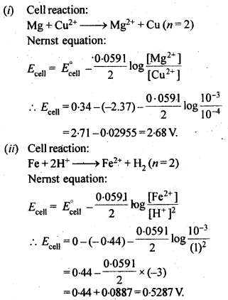
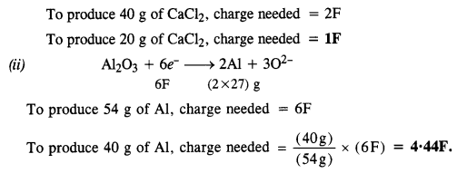

NCERT Solutions For Class 12 Chemistry Chapter 3 Electrochemistry
Topics and Subtopics in NCERT Solutions for Class 12 Chemistry Chapter 3 Electrochemistry:
| Section Name | Topic Name |
| 3 | Electrochemistry |
| 3.1 | Electrochemical Cells |
| 3.2 | Galvanic Cells |
| 3.3 | Nernst Equation |
| 3.4 | Conductance of Electrolytic Solutions |
| 3.5 | Electrolytic Cells and Electrolysis |
| 3.6 | Batteries |
| 3.7 | Fuel Cells |
| 3.8 | Corrosion |
NCERT TEXTBOOK QUESTIONS SOLVED
3.1. How would you determine the standard electrode potential of the system Mg2+1 Mg?
Ans: A cell will be set up consisting of Mg/MgSO4 (1 M) as one electrode and standard hydrogen electrode Pt, H, (1 atm)H+/(l M) as second electrode, measure the EMF of the cell and also note the direction of deflection in the voltmeter. The direction of deflection shows that e-1 s flow from mg electrode to hydrogen electrode, i.e., oxidation takes place on magnesium electrode and reduction on hydrogen electrode. Hence, the cell may be represented as follows :
3.2. Can you store copper sulphate solutions in a zinc pot?
Ans: Zn being more reactive than Cu, displaces Cu from CuSO4 solution as follows:Zn (s) + CuSO4 (aq) –> ZnSO4(ag)+Cu (s)
3.3. Consult the table on standard electrode potentials and suggest three substances that can oxidise Fe2+ ions under suitable conditions.
Ans. The oxidation of Fe2+ ions to Fe3+ ions proceeds as follows :
Fe2+ → 3+ + e– ; \({ E }_{ OX }^{ \circ }\) = – 0·77 V
Only those substances can oxidise Fe2+ ions to Fe3+ ions which can accept electrons released during oxidation or are placed above iron in electrochemical series. These are : Cl2(g), Br2(g) and Cr2\({ O }_{ 7 }^{ 2- }\) ions (in the acidic medium).
3.4. Calculate the potential of hydrogen electrode in contact with a solution whose pH is 10.
Ans. For hydrogen electrode,H+ + e– —>1/2 H2,
3.5. Calculate the emf of the cell in which the following reaction takes place:
Ni(s)+2Ag+ (0.002 M) -> Ni2+ (0.160 M)+2Ag(s) Given that E(-)(cell) = 1.05 V .
Ans:
3.6. The cell in which the following reaction occurs: 2Fe3+ (aq) + 2I– (aq) —> 2Fe2+ (aq) +I2 (s) has E°cell=0.236 V at 298 K. Calculate the standard Gibbs energy and the equilibrium constant of the cell reaction.
Ans:
3.7. Why does the conductivity of a solution decrease with dilution?
Ans: The conductivity of a solution is linked with the number of ions present per unit volume. With dilution, these decrease and the corresponding conductivity or specific conductance of the solution decreases.
3.8. Suggest a way to determine the value of water.
Ans:
3.9. The molar conductivity of 0.025 mol L-1 methanoic acid is 46.1 S cm2 mol-1. Calculate its degree of dissociation and dissociation constant Given λ°(H+)=349.6 S cm2 mol-1 andλ°(HCOO-) = 54.6 S cm2 mol-1
Ans:
3.10. If a current of 0.5 ampere flows through a metallic wire for 2 hours, then how many electrons would flow through the wire?
Ans:
3.11. Suggest a list of metals which can be extracted electrolytically.
Ans: The highly reactive metals having large -ve E° values, which can themselves act as powerful reducing agents can be extracted electrolytically. The process is known as electrolytic reduction. For details, consult Unit-6. For example, sodium, potassium, calcium, magnesium etc.
3.12. Consider the reaction: Cr2O72--+ 14H+ + 6e- -> 2Cr3+ + 7H2O What is the quantity of electricity in coulombs needed to reduce 1 mol of Cr2O72- ?
Ans:
3.13. Write the chemistry of recharging the lead storage battery, highlighting all the materials that are involved during recharging.
Ans: A lead storage battery consists of anode of lead, cathode of a grid of lead packed with lead dioxide (PbO2) and 38% H2SO4 solution as electrolyte. When the battery is in use, the reaction taking place are:
On charging the battery, the reverse reaction takes place, i.e., PbSO4 deposited on electrodes is converted back to Pb and PbO2 and H2SO4 is regenerated.
3.14. Suggest two materials other than hydrogen that can be used as fuels in the fuel cells.
Ans: Methane (CH4) and methanol (CH3OH) can also be used as fuels in place of hydrogen in the fuel cells.
3.15. Explain how rusting of iron is envisaged as setting up of an electrochemical cell.
Ans: The water present on the surface of iron dissolves acidic oxides of air like CO2 , SO2 , etc. to form acids which dissociate to give H+ ions :
Thus, an electrochemical cell is set up on the surface.
Ferrous ions are further oxidised by atmospheric oxygen to ferric ions which combine with water to form hydrated ferric oxide, Fe2O3. xH2O, which is rust.
NCERT EXERCISES
3.1. Arrange the following metals in the order in which they displace each other from their salts.
Al, Cu, Fe, Mg and Zn
Sol: Mg, Al, Zn, Fe, Cu.
3.2. Given the standard electrode potentials, K+/K=-2. 93 V, Ag+/Ag = 0.80 V, Hg2+/Hg =0.79V, Mg2+/Mg=-2.37V, Cr3+/Cr=0.74V.
Arrange these metals in their increasing order of reducing power.
Sol: Higher the oxidation potential more easily it is oxidized and hence greater is the reducing power. Thus, increasing order of reducing power will be Ag<Hg<Cr<Mg<K.
3.3. Depict the galvanic cell in which the reaction
Zn(s) + 2Ag+(aq) —-> 7M2+(aq) + 2Ag (s) takes place. Further show:
(i) Which of the electrode is negatively charged?
(ii) The carriers of the current in the cell.
(iii) Individual reaction at each electrode.
Sol. The set-up will be similar to as shown below,
(i) Anode, i. e, zinc electrode will be negatively charged.
(ii) The current will flow from silver to copper in the external circuit.
(iii) At anode: Zn(s) ——–> Zn2+(aq) + 2e–
At cathode: 2Ag+(aq) + 2e– ——–> 2Ag(s)
3.4. Calculate the standard cell potentials of the galvanic cells in which the following reactions take place.
Also calculate ∆G° and equilibrium constant for the reaction. (C.B.S.E. Outside Delhi 2008)
Sol:
3.5. Write the Nernst equation and emf of the following cells at 298 K:

Sol:

3.6. In the button cells widely used in watches and other devices the following reaction takes place:
Sol:
3.7. Define conductivity and molar conductivity for the solution of an electrolyte. Discuss their variation with concentration.
Sol: The reciprocal of resistivity is known as specific conductance or simply conductivity. It is denoted by K (kappa). Thus, if K is the specific conductance and G is the conductance of the solution, then
Now, if I = 1 cm and A = 1 sq.cm, then K = G.
Hence, conductivity of a solution is defined as the conductance of a solution of 1 cm length and having 1 sq. cm as the area of cross-section. Alternatively, it may be defined as conductance of one centimetre cube of the solution of the electrolyte.
Molar conductivity of a solution at a dilution V is the conductance of all the ions produced from 1 mole of the electrolyte dissolved in V cm3 of the solution when the electrodes are one cm apart and the area of the electrodes is so large that the whole of the solution is contained between them. It is represented by ∆m.
Variation of conductivity and molar conductivity with concentration: Conductivity always decreases with decrease in concentration, for both weak and strong electrolytes. This is because the number of ions per unit volume that carry the current in a solution decreases on dilution.
Molar conductivity increases with decrease in concentration. This is because that total volume, V, of solution containing one mole of electrolyte also increases. It has been found that decrease in K on dilution of a solution is more than compensated by increase in its volume.
3.8. The conductivity of 0.20 M solution of KCl at 298 K is 0.0248 S cm-1. Calculate its molar conductivity.
Sol:
3.9. The resistance of a conductivity cell containing 0.001 M KCI solution at 298 K is 1500 Ω What is the cell constant if conductivity of 0.001 M KCI solution at 298 K is 0.146 x 10-3 S cm-1?
Sol:
3.10. The conductivity of NaCl at 298 K has been determined at different concentrations and the results are given below:

Sol:
3.11. Conductivity of 0.00241 M acetic acid is 7.896 x 10-5 S cm-1. Calculate its molar conductivity. If Λm0, for acetic acid is 390.5 S cm2 mol-1, what is its dissociation constant?
Sol:
3.12. How much charge is required for the following reductions:
(i) 1 mol of Al3+ to Al?
(ii) 1 mol of Cu2+ to Cu ?
(iii) 1 mol of Mn04- to Mn2+?
Sol: (i) The electrode reaction is Al3+ + 3e ——> Al
∴ Quantity of charge required for reduction of 1 mol of Al3+=3F=3 x 96500C=289500C.
(ii) The electrode reaction is Cu2+ + 2e– ——–> Cu
∴ Quantity of charge required for reduction of 1 mol of Cu2+=2F=2 x 96500=193000 C.
(iii) The electrode reaction is Mn04- ———-> Mn2+.
i.e., Mn7+ + 5e–——-> Mn2+.
∴ Quantity of charge required = 5F
=5 x 96500 C=4825000.
3.13. How much electricity in terms of Faraday is required to produce :
(i) 20·0 g of Ca from molten CaCl2
(ii) 40·0 g of Al from molten Al2O3 ?
Sol:

3.14. How much electricity is required in coulomb for the oxidation of (i) 1 mol of H2O to 02 (ii) 1 mol of FeO to Fe203
Sol:
3.15. A solution of Ni(N03)2 is electrolyzed between platinum electrodes using a current of 5 amperes for 20 minutes. What mass of Ni is deposited at the cathode?
Sol:
3.16. Three electrolytic cells A, B, C containing solutions of ZnS04, AgNO3 and CuS04, respectively are connected in series. A steady current of 1.5 amperes was passed through them until 45 g of silver deposited at the cathode of call B. How long did the current flow? What mass of copper and zinc were deposited?
Sol:

3.17. Using the standard electrode potentials given in the table, predict if the reaction between the following is feasible.
(a) Fe3+(aq) and I–(aq)
(b) Ag+(aq) and Cu(s)
(c) Fe3+(aq) and Br–(aq)
(d) Ag(s) and Fe3+(aq)
(e) Br2(aq) and Fe2+(aq).
Sol:
A particular reaction can be feasible if e.m.f. of the cell based on the E° values is positive. Keeping this in mind, let us predict the feasibility of the reactions.
3.18. Predict the products of electrolysis in each of the following.
(i) An aqueous solution of AgNO3 with silver electrodes.
(ii) An aqueous solution of AgNO3 with platinum electrodes.
(iii) A dilute solution of H2S04 with platinum electrodes.
(iv) An aqueous solution of CuCl2 with platinum electrodes.
Sol:
More Resources for CBSE Class 12: